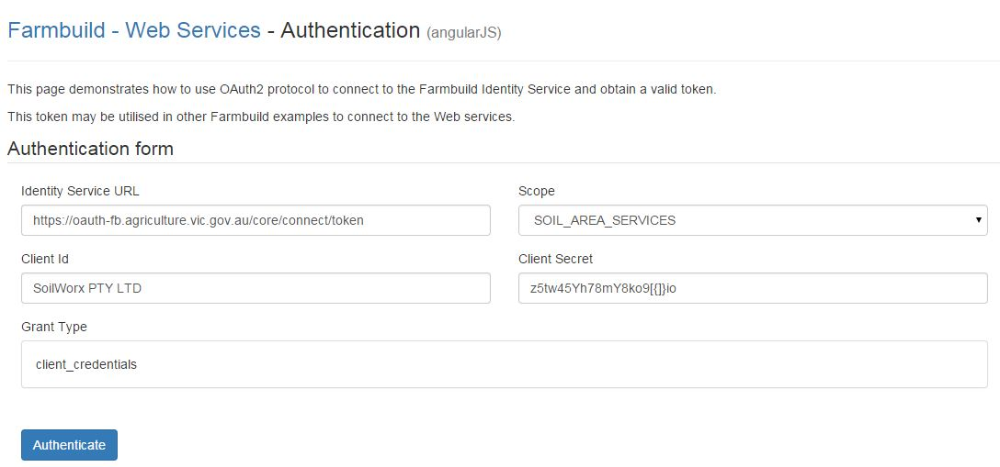

Farm Build Soil Area Service
This is the 'Soil Area Service' module of farmbuild javaScript library. GITHUB Repo
The 'Soil Area Service' is a web service that can be integrated into new or existing platforms.
The 'Soil Area Service' is a web service that returns the spatial intersection of the farmdatablock(farm boundry and paddocks) to the GMID Soil's data.
The GMID Soils dataset is also available as a WFS service. You can find more information on the soil surveys conducted in the GMID (Goulburn Murray Irrigation District) region on the VRO website.
The Soil Area Service requires a valid OAuth2 protocol Token (authentication) in order to connect to the FarmBuild Identity service.

The process to obtain successful Authentication to the Soil Area service is...
- Register with Farmbuild
- Keep your successful registration email in a safe place. It contains the "CLIENT ID" and the "CLIENT SECRET". These are required for application Authentication.
- The FarmBuild Authentication sample demonstrates the required data including the "CLIENT ID" and the "CLIENT SECRET" from registration process, to generate the client token.
The Soil Area Service Sample includes the ability to...
- Authenticate with OAuth using the client token.
- Load a farmdatablock.json file (Can be generated from the Farmbuild Web Mapping module sample)
- Return Farm Boundary Area Intersection of GMID soil types(Soils & Rural Parcel WFS).
- Return Farm Paddocks Area Intersection of GMID soil types

The Soil Area Service has been designed to write the soil description, and farm paddock data into a specified JSON structure called the 'Farm Data Block'.
Through the JSON structure, the JSON exports are interoperable with the other farmbuild modules.